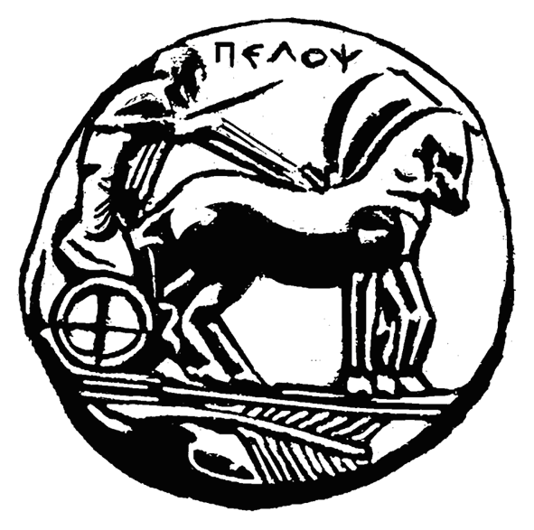

<div id="content" class="content" role="main">
  <div class="v3_50 container-fluid" id="a1">
    <div class="row">
      <div class="col-12 col-md-7 left-col">
        <br />
        <input type="checkbox" id="ChangeTheme" />
        <div class="v3_60">
          <h1 id="mainHeading" class="main-heading">Γραφείο Πρακτικής Άσκησης</h1>
          <br />
          
          <br /><br />
          <span *ngIf="isRoute()" id="minorHeading" class="minor-heading">Συνδεθείτε ανάλογα με την ιδιότητά σας</span>
        </div>
        <app-home-buttons *ngIf="isRoute()"></app-home-buttons>
        <app-student-login-terms *ngIf="isTermsRoute()"></app-student-login-terms>
        <app-company-login-terms *ngIf="isCompanyTermsRoute()"></app-company-login-terms>
        <app-credentials-generic-login *ngIf="isCredentialsRoute()"></app-credentials-generic-login>
      </div>
      <div class="col-12 col-md-5 allomiso">
        <div id="languageDiv" class="lang">
          <select class="selectpicker" id="langSelectBox" data-width="fit">
            <option>&nbsp;🇬🇷&nbsp;Greek</option>
            <option>&nbsp;🇬🇧&nbsp;English</option>
          </select>
        </div>
        <div class="col-content">
          <h2 class="pt-5"><br />Σκοπός</h2>
          <br />
          <p>
            Το πρόγραμμα «Πρακτική Άσκηση Φοιτητών του Πανεπιστημίου
            Πελοποννήσου» που υλοποιείται στο πλαίσιο του Επιχειρησιακού
            Προγράμματος «Εκπαίδευση και Δια Βίου Μάθηση» (Ε.Π.Ε.Δ.Β.Μ.)
            2007-2013 και συγχρηματοδοτείται από την Ευρωπαϊκή Ένωση (Ευρωπαϊκό
            Κοινωνικό Ταμείο) και από Εθνικούς Πόρους, ενισχύει σημαντικά την
            προσπάθεια σύνδεσης του Πανεπιστημίου με την αγορά εργασίας. Τα
            οφέλη στα οποία στοχεύει το Πανεπιστήμιο Πελοποννήσου μέσα από την
            υλοποίηση της Πρακτικής Άσκησης είναι:
          </p>
          <ul>
            <li>
              Εξοικείωση του φοιτητή με την αγορά εργασίας (απαιτήσεις φορέων
              απασχόλησης, διαχείριση εργασιακών σχέσεων, απόκτηση
              επαγγελματικής συνείδησης και δεοντολογίας, ανάληψη πρωτοβουλίας)
            </li>
            <li>
              Απόκτηση εργασιακής προϋπηρεσίας σχετικής με το αντικείμενο
              σπουδών τους
            </li>
            <li>
              Σύνδεση των σπουδών με την επαγγελματική απασχόληση και ανεύρεση
              τρόπων συνδυασμού διαφορετικών επιστημών κατά την απασχόληση τους.
            </li>
            <li>Ανάδειξη των δεξιοτήτων των ασκουμένων</li>
            <li>
              Επαγγελματική δικτύωση φοιτητών και σύνδεση σπουδών με αγορά
              εργασίας
            </li>
          </ul>
        </div>
        <br>
        <div class="m-auto pt-2" style="width:75%; border-radius:20px;">
          
        </div>
      </div>
      <footer>
        <div class="v3_54"></div>
        <div class="v3_55"></div>
      </footer>
      <button id="darkmodeBtn" class="v3_56">
        <i style="color:#2c2c2c;" class="fas fa-3x fa-adjust"></i>
      </button>
    </div>
  </div>
</div>
